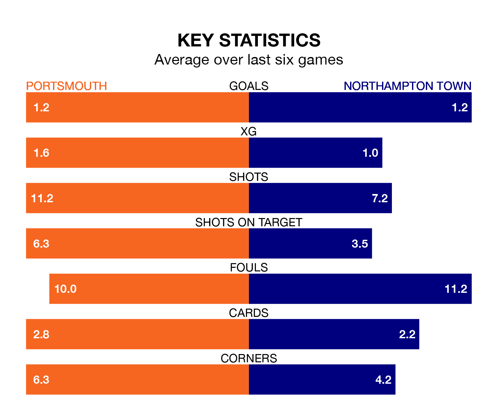

Portsmouth are heavy favourites to keep all three points at home in Saturday's kick-off against Northampton Town.
Pompey, who sit top of EFL League One with 30 games played, are priced at 1.5 to seal victory at Fratton Park.
Sitting nine places and 20 points behind them in the table, Northampton are 5.1 to win with *Betting Company*, while the draw is at 3.9.
With Will Norris between the sticks, Portsmouth can rely on one of the league's safest pair of hands. He has kept 14 clean sheets in his 30 appearances this season, and no 'keeper has prevented the opposition scoring more often in EFL League One.
In Northampton's net, Max Thompson has five clean sheets in 15 games. He has conceded a goal every 79 minutes, 40% more often than the 113 minutes between goals for Norris.
With 46 goals in 30 games so far this season, Pompey are scoring more than average in the league with 1.5 goals per game. And they are conceding fewer than average, letting in 27 goals at a rate of 0.9 per game.
Town, meanwhile, are below average scorers, with 1.2 goals per game, compared to a league average of 1.3. They have conceded 1.4 goals per game.
In the last 10 years, Portsmouth and Northampton have played each other on 10 occasions. Portsmouth won six of them and Northampton four.
On average, Pompey scored 2.0 goals and the Cobblers 1.4 in those matches.
Their last meeting was on December 2, when Portsmouth won 3-0 away.
The hosts are in mixed form in EFL League One, with three wins and a draw from their last six games.
And also with three wins and a draw over that period, the Cobblers' form is identical – they have both taken 10 points from 18.
Portsmouth's last match was on Tuesday, a 2-2 draw against Oxford United, with Colby Bishop getting the goals for Pompey.
Northampton lost 2-0 against Shrewsbury Town last time out, on January 27.
Updated: 14:12 (UTC), 02/02/24